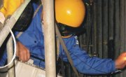

Cost-Effective Condition Assessment of Steam-Cooled Boiler Tubes
Cost-Effective Condition Assessment of Steam-Cooled Boiler Tubes
December 5, 2017
Agent Experience, News
This blog is the first in a series discussing boiler tube condition assessments. While these basics might be familiar to many, this first installment will serve as a refresher to the experienced and an introduction to novices. Have you faced one of these scenarios regarding your steam-cooled ferritic (superheater and reheater) tubing?
READ MORE
A real-time cost analysis tool for power plant operations supports owners' and operators' capital planning, operations training and decision making.
Cost Control of Operations and Maintenance (COSTCOM)
December 5, 2017
Agent Experience, News
Power plants that often start, stop, cycle, two shift, and operate above a unit's rating impact the life of the unit and total associated unit operating costs. Intertek has developed a real-time operations code called COSTCOM that is specifically calibrated to display the maintenance, capital replacement, and wear-and-tear costs associated with these potentially damaging operations. Intertek has analyzed actual cycling costs for nearly 300 power generating plants.
READ MORE
Are You Your Own Worst Enemy?
Lubrication Storage and Handling Pratices
December 5, 2017
Agent Experience, News
Many hours have been devoted to studying the formulation of lubricants. Major oil companies employ entire departments of doctorate-level chemists to develop specific oils and greases for a variety of applications. These activities require in-depth knowledge of the specific need for the lubricant and the tools available to meet it, ranging from the refining process itself to the additive packages used to achieve specific characteristics.
READ MORE